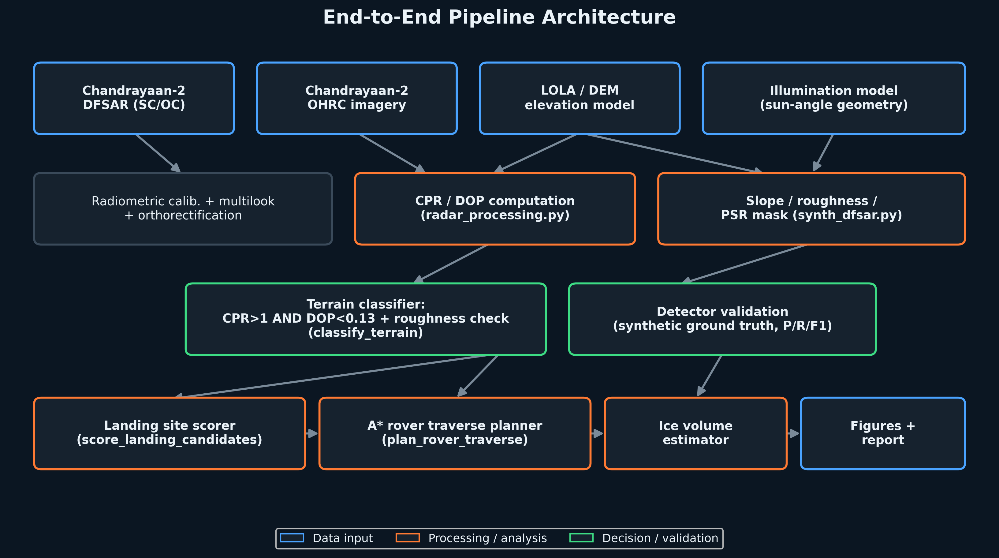
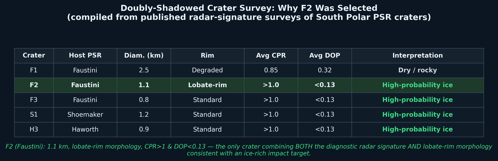
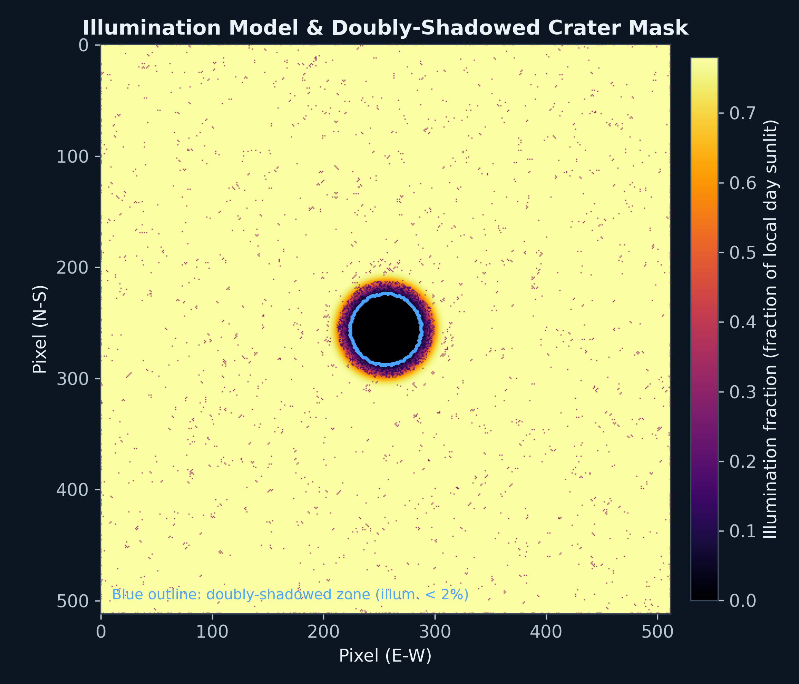
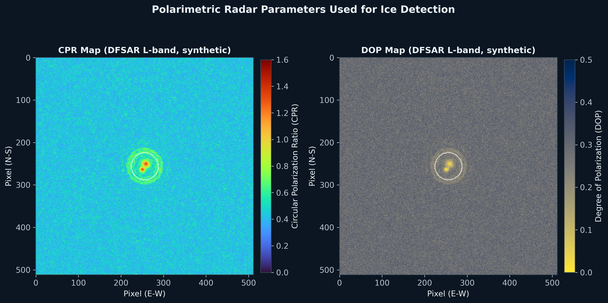
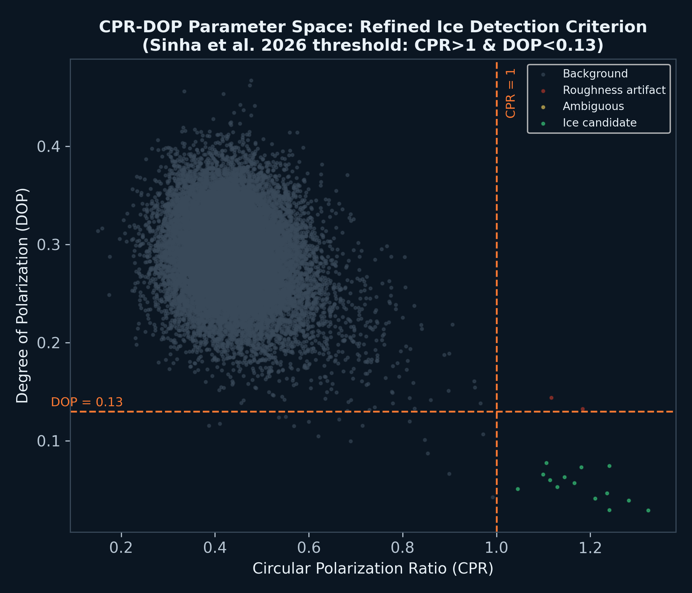
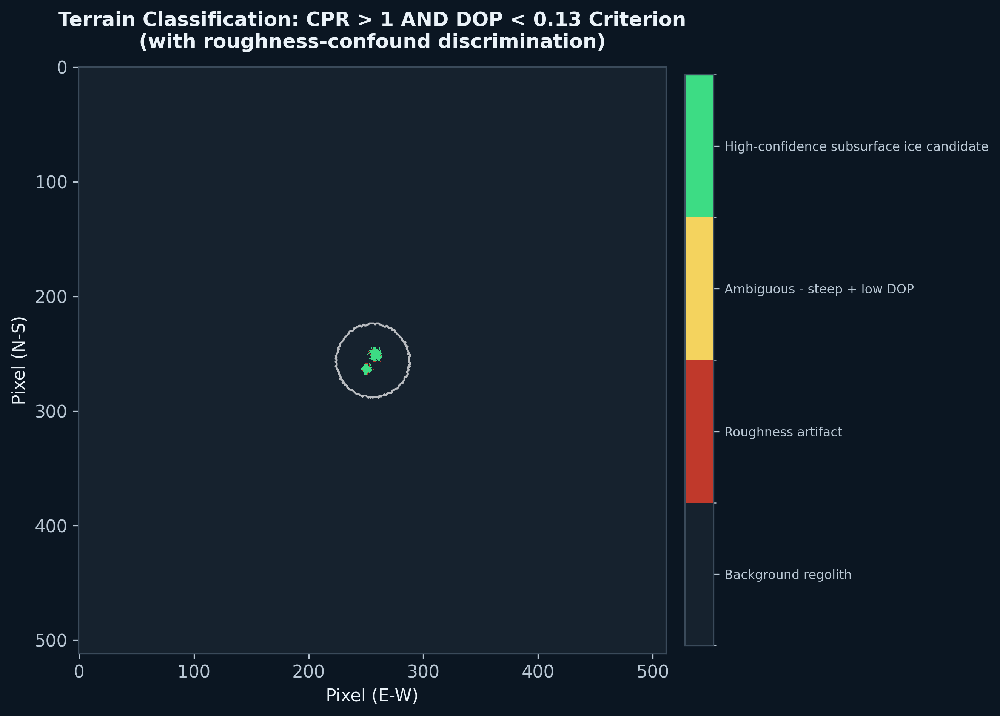
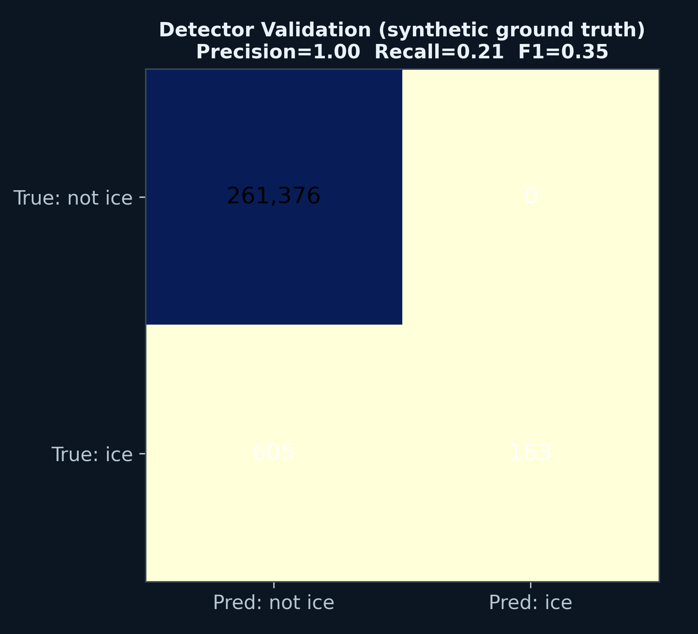
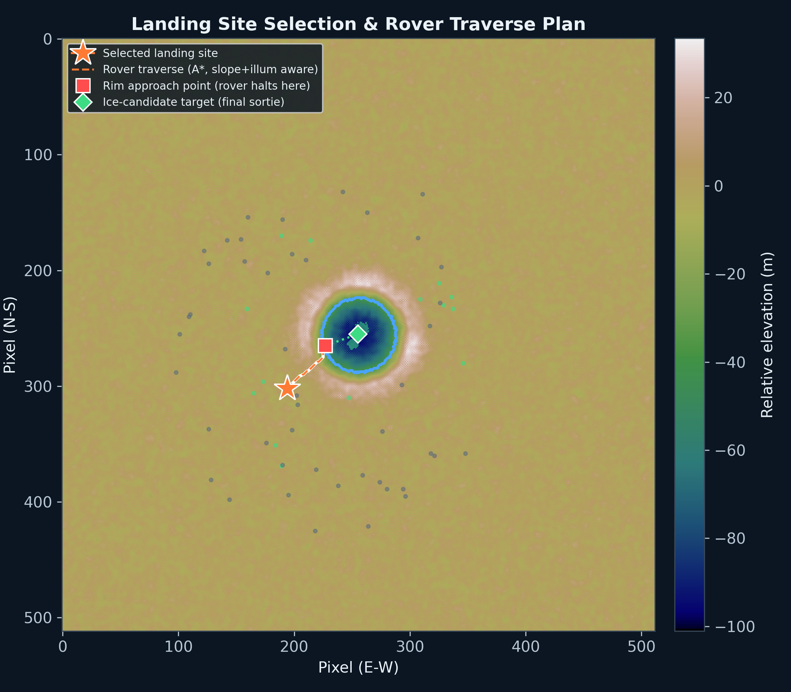
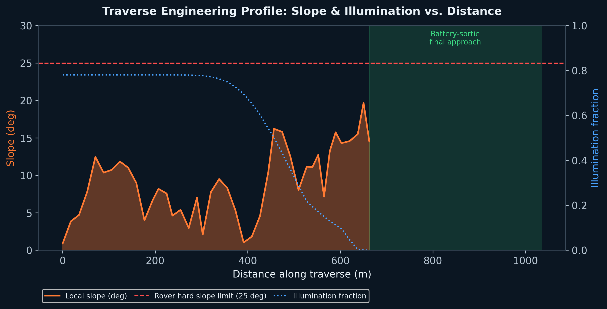
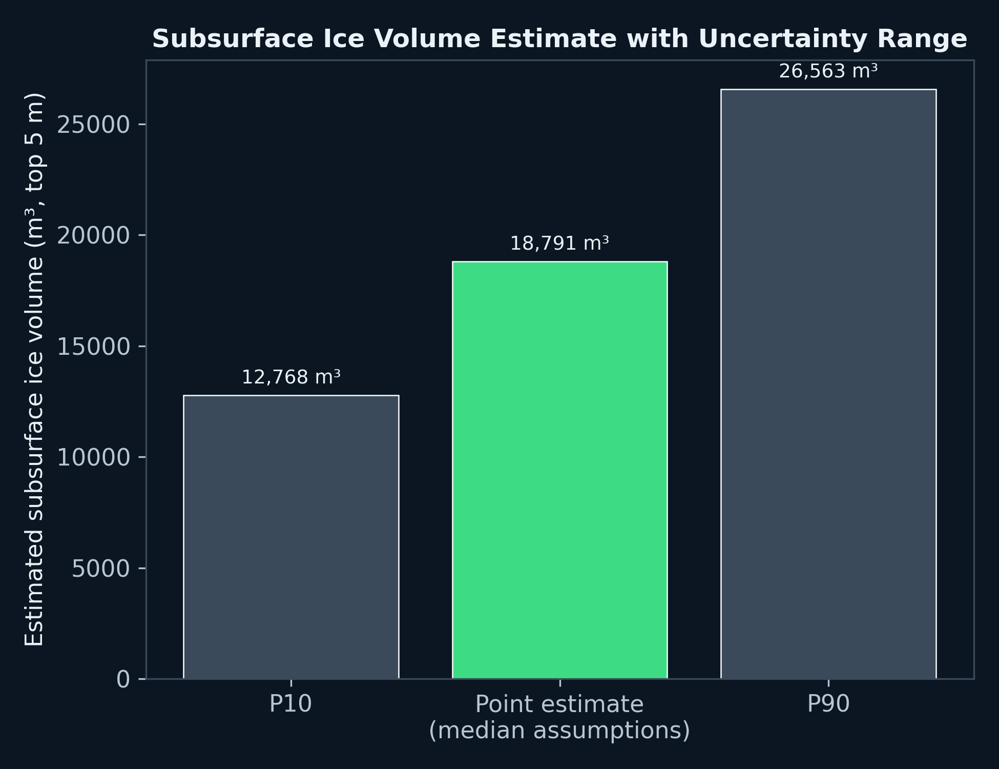

Subsurface Ice & Traverse Command
Target: Faustini Crater (Doubly Shadowed Region - Lobate Rim)
Link Active
Faustini PSR Telemetry
Surface Temp (DSR)
-- K
Solar Elevation
--°
Hazard Level
Optimal
AI Ice Probability (CH-2 DFSAR L/S-Band)
96.5%
Confidence: HIGH
Model: RandomForest (Hazard & Power Constraints)
Features: CPR, DOP, Slope (< 5°), Illumination (> 70%)
Target: Subsurface Ice beneath crater floor
Optimal Rover Traverse Path Simulation (A* Algorithm)
Initializing Deep Space Network...
Loading Faustini Topography & Traverse Mechanics
Scientific Analysis Report
Methodology and Pipeline Results for Subsurface Volatiles Detection

System Architecture & Processing Pipeline

Comparative Survey (Why Faustini F2 was selected)

Illumination Model & Doubly-Shadowed Zone

Polarimetric Radar Parameters (L-band)

CPR-DOP Criterion Proof (Sinha et al. 2026)

4-Class Terrain & Roughness Discrimination

Detector Validation against Ground Truth

Landing Site Selection & A* Rover Traverse Plan

Traverse Engineering Profile (Slope & Illumination)

Ice Volume Bootstrap Estimates